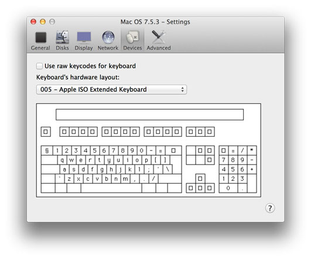
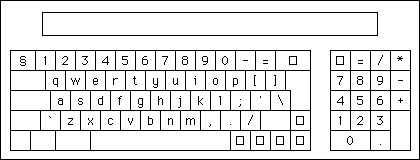
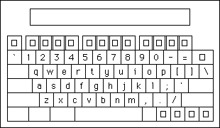

Devices settings tab

Here you will find settings for external devices. Currently there are settings only for keyboards.
Keyboard hardware layout
Here you can specify the keyboard type that the emulator should report to the guest system. The default is "5" which is a "Apple ISO Extended Keyboard", but many other numbers are understood by most versions of Mac OS (e.g. 11 is a "Macintosh Plus Keyboard with keypad", 13 is a "Apple PowerBook Keyboard").
For additional information, consult these pages:
Below are the keyboard layouts of all Macintosh keyboards supported in the international system software. Medusa's default is "Apple ISO Extended Keyboard".
1. Apple Keyboard

2. Apple Extended Keyboard

3. Macintosh 512K Keyboard

4. Apple ISO Keyboard

5. Apple ISO Extended Keyboard

6. Macintosh Portable Keyboard

7. Macintosh Portable International Keyboard

8. Macintosh Keyboard II

9. Macintosh ISO Keyboard II

10. Unknown Keyboard

11. Macintosh Plus Keyboard

12. PowerBook Keyboard

13. PowerBook ISO Keyboard

14. Apple Adjustable Keyboard (Numeric Part)

16. Apple Adjustable Keyboard

17. Apple Adjustable ISO Keyboard

20. PowerBook Extended Keyboard

24. PowerBook ISO Extended Keyboard

259. Macintosh 512K International Keyboard